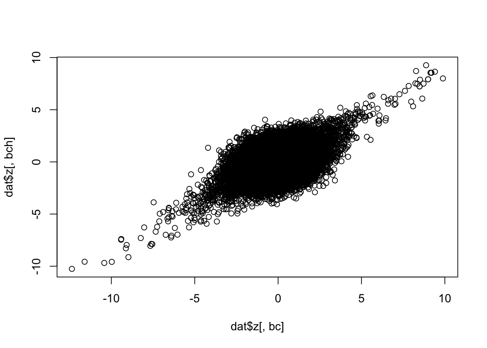
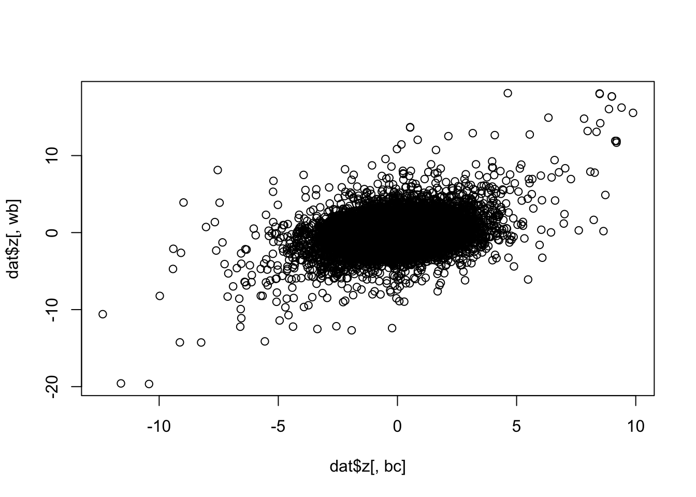
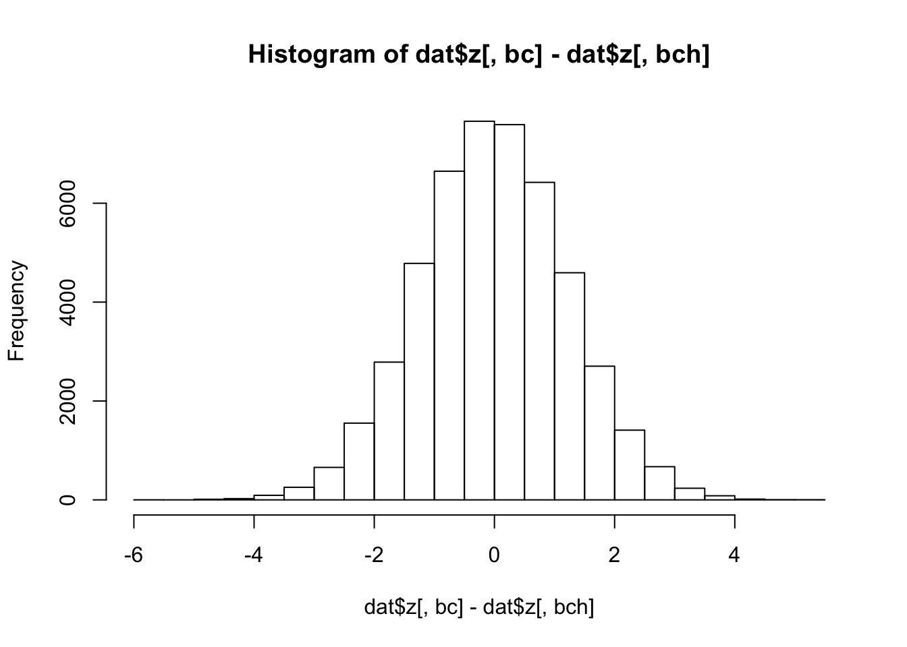
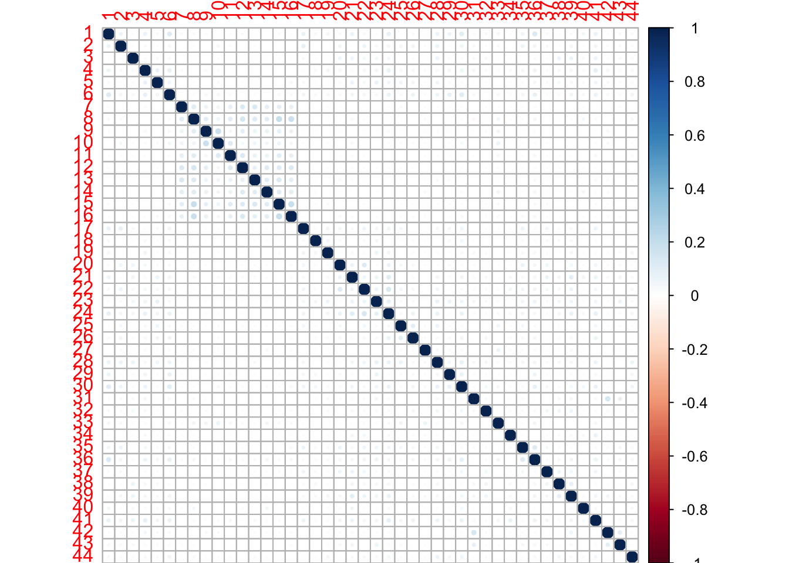

Last updated: 2017-03-06
Code version: f0c2ef6
Read in \(z\) scores and look at correlations between “nullish” (very non-significant) \(z\) scores. In this case I define nullish as absolute value <2.
source("../code/SumstatQuery.R")Loading required package: rhdf5Loading required package: RSQLite ##
# Load data for a random subset of eqtls
dat <- GetSS("null", "../data/MatrixEQTLSumStats.Portable.h5")
bc = "Brain_Cerebellum"
bch = "Brain_Cerebellar_Hemisphere"
plot(dat$z[,bc],dat$z[,bch])
nullish = abs(dat$z[,bc])<2 & abs(dat$z[,bch])<2
cor(dat$z[nullish,bc],dat$z[nullish,bch])[1] 0.2333828Compare whole blood and cerebellum:
wb = "Whole_Blood"
plot(dat$z[,bc],dat$z[,wb])
nullish = abs(dat$z[,wb])<2 & abs(dat$z[,bc])<2
cor(dat$z[nullish,wb],dat$z[nullish,bc])[1] 0.03799596Assume \[z^r_j = \mu^r_j + e_j\] where \(e_1,e_2\) are joint normal with variance 1 and some covariance (same as correlation since they are variance 1). Then \(E((z^r_1 - z^r_2)^2) = E(\mu^r_1-\mu^r_2)^2 + 2(1-cov(e_1,e_2)) > 2(1-cov(e_1,e_2))\).
Thus \[cov(e_1,e_2) > 1- 0.5E((z^r_1 - z^r_2)^2)\] gives a lower bound on the covariance. The following therefore suggests that the correlation between the two tissues is at least 0.2469158.
hist(dat$z[,bc]-dat$z[,bch])
1-0.5*mean((dat$z[,bc]-dat$z[,bch])^2)[1] 0.2469158But for wb we have a lower bound of -0.2472646 so we cannot be sure of any correlation in this case.
max_absz = apply(abs(dat$z),1, max)
nullish = which(max_absz < 2)
nz = dat$z[nullish,]
vhat = cor(nz)
saveRDS(vhat,file = "../data/vhat.RDS")
vhat[bc,bch][1] 0.1857079 vhat[bc,wb][1] 0.02045105 eigen(vhat)$values
[1] 2.3266675 1.8704651 1.2475605 1.2021521 1.1580008 1.1353868 1.1102434 1.0894189 1.0637345 1.0530726 1.0368490
[12] 1.0293853 1.0252985 1.0115447 1.0046156 0.9993881 0.9888896 0.9785565 0.9746995 0.9715746 0.9646358 0.9597148
[23] 0.9461157 0.9388400 0.9282310 0.9225111 0.9120085 0.9048764 0.8978758 0.8829140 0.8790108 0.8727914 0.8587505
[34] 0.8545009 0.8453241 0.8390861 0.8296191 0.8180433 0.8108569 0.7957429 0.7933229 0.7712908 0.7591681 0.7372654
$vectors
[,1] [,2] [,3] [,4] [,5] [,6] [,7] [,8]
[1,] -0.21859378 -0.058570939 -0.155530072 -0.1563725806 -0.2154016707 0.314058677 -0.019873474 -0.185446320
[2,] -0.15313863 -0.108477224 -0.091687800 -0.1996134270 0.2438854249 0.076902203 -0.071964726 -0.037814592
[3,] -0.11689139 -0.114146790 0.133171209 0.1785438623 0.0022366988 -0.141212839 0.172894764 -0.062079252
[4,] -0.18779187 -0.093252167 0.018187197 -0.1310995714 -0.0938131752 -0.076656761 0.012814112 0.072675349
[5,] -0.14753690 -0.084952974 0.024271587 0.0519624818 -0.0021110095 -0.242734833 -0.147073160 -0.016307120
[6,] -0.22881854 -0.055787881 -0.091674776 -0.1933378840 -0.1836587430 -0.003233530 0.090639082 -0.126158778
[7,] -0.11795613 0.251035395 0.004545913 0.1027359366 0.0325042787 0.027549524 0.040891034 0.256521098
[8,] -0.16075116 0.350446978 -0.003552397 0.1635623181 -0.0964705578 0.037134624 -0.081115443 -0.046812066
[9,] -0.12579539 0.232553578 0.051338401 -0.2119308399 0.2039971119 -0.021342277 0.355601280 -0.005729786
[10,] -0.13391387 0.179995067 0.044616965 -0.2953815595 0.1883662152 -0.140231756 0.431782740 -0.035810561
[11,] -0.13823833 0.230766835 0.043893913 -0.0118036223 0.0742348233 0.025078652 0.198145319 0.026521876
[12,] -0.12767053 0.301950902 0.026528157 0.1188694831 0.0494788704 0.128125359 -0.037299139 -0.025930547
[13,] -0.11838039 0.263617239 0.025523683 0.1071162610 -0.0159441763 -0.043079330 0.049548706 0.117887721
[14,] -0.11868237 0.263808363 0.024795246 0.0288370123 -0.0220410345 -0.078390572 -0.144237189 -0.105179590
[15,] -0.15234693 0.342135947 0.022335146 0.0796053169 -0.0867167825 -0.019762258 -0.125859245 0.067840427
[16,] -0.16245278 0.305096253 0.040504499 0.1158753808 -0.0137103509 0.008339731 -0.280911783 -0.054444968
[17,] -0.14619930 -0.100103576 -0.150755927 0.0002641812 0.1248627443 0.256724335 0.065832107 0.091784046
[18,] -0.07418301 -0.053777902 0.019730270 -0.0125719703 -0.1674611972 0.204429058 0.118517430 0.386618507
[19,] -0.12480619 -0.054638248 0.073017221 0.0038046552 -0.1692130972 0.113982842 0.011540126 0.203023081
[20,] -0.15469310 -0.076037564 0.002381870 0.1116692009 0.3672348901 0.180074256 -0.070267867 -0.039925086
[21,] -0.19186639 -0.083762464 0.146917223 0.2434174553 0.0229091240 0.047944832 0.131562247 -0.285559563
[22,] -0.17785922 -0.121201107 -0.060563656 0.1629211593 0.3570343754 0.075582357 0.007100568 0.033964643
[,9] [,10] [,11] [,12] [,13] [,14] [,15] [,16]
[1,] 0.03715477 -0.111755271 0.0036957714 -0.094898293 -0.028453671 0.046055483 -0.0653907087 0.010073943
[2,] 0.41907791 -0.060648903 -0.0980823531 -0.008581136 0.044795157 -0.157793150 0.0847932729 -0.065333129
[3,] 0.10942232 -0.107210856 -0.1446385468 0.268472344 0.017112474 -0.100348815 -0.0288607683 0.044686993
[4,] -0.22428082 0.095320563 0.0292040046 -0.184633040 -0.259069960 0.062278438 -0.1658794885 -0.103761568
[5,] -0.34596023 -0.149227831 0.2386679677 0.212799490 -0.021714444 -0.190408405 0.0192043950 -0.040245816
[6,] -0.09942321 -0.056673039 -0.0821313781 0.024033071 -0.181335067 0.033219330 0.1719174350 0.056449593
[7,] 0.05766716 -0.232662806 -0.1075337919 -0.195863571 -0.093103486 0.008189655 -0.2801366170 0.026012959
[8,] -0.01380425 0.056077886 0.0797565880 0.134599310 -0.007110815 -0.018114730 0.1811216389 -0.114269674
[9,] -0.11759904 0.072619403 0.1369268065 -0.018295597 -0.019765827 -0.103415610 0.0910570793 0.165473902
[10,] 0.01529205 0.080157867 0.2563470302 0.028398485 -0.012290915 -0.079987108 0.0987658195 0.087165516
[11,] 0.18189233 -0.016835448 0.0134209334 -0.031411835 -0.048951429 0.189768455 -0.0497153087 -0.276645118
[12,] 0.10312832 -0.002400634 -0.0622490702 -0.201567082 0.060536900 0.008623651 -0.0792784181 0.033260611
[13,] -0.07410144 -0.165143177 -0.2879762499 0.171396988 0.027879941 0.081180262 -0.0965943892 0.023542567
[14,] 0.07013347 0.076983106 -0.0630398662 -0.048165489 0.152985605 -0.110621611 -0.2770752435 0.214621163
[15,] -0.04591796 -0.030116749 0.0023234552 0.006117418 0.004447907 -0.044093422 0.1777111154 -0.055047663
[16,] -0.07603399 0.038366831 0.0964156168 0.068465715 -0.088936151 -0.110782164 0.1865299377 -0.023094842
[17,] 0.07566087 -0.024748091 -0.0612185857 0.070941647 0.115672624 -0.540284681 0.0830354922 -0.177970545
[18,] -0.21638144 0.280057920 -0.1690932843 0.097761678 -0.160978871 -0.147529381 -0.0002196483 0.080950890
[19,] -0.18002537 0.188601553 0.0422339508 -0.425103825 0.222030419 -0.157841958 0.1902813954 -0.114636496
[20,] -0.13535425 0.045617102 -0.2731777472 0.201247071 -0.195275823 0.100251875 0.0618194510 0.146640909
[21,] -0.08667854 0.035199308 0.1684835681 0.104968791 0.124872526 0.067725215 -0.0370390396 0.155213076
[22,] -0.13375508 0.034406743 -0.1763466988 -0.150172877 0.124805121 0.183749486 0.0341538370 0.104033096
[,17] [,18] [,19] [,20] [,21] [,22] [,23] [,24]
[1,] -0.0138968657 0.079337302 -0.160369303 0.116652100 0.1476169891 0.115680365 0.0078172216 -0.130610514
[2,] 0.1030075982 -0.095967143 0.076326802 0.050678085 -0.0939470273 -0.114308693 0.0456761994 0.128403739
[3,] -0.0404300011 0.518341312 0.292197721 -0.124940930 0.2461026962 0.072627987 0.2371931681 -0.027166324
[4,] -0.1957987556 0.120213756 -0.113628409 0.024117598 -0.0364067157 -0.244001075 0.4498214627 0.217332150
[5,] -0.1615873449 -0.168769315 -0.114789993 0.275536592 -0.0656015886 -0.154949396 0.1951107385 -0.103304480
[6,] 0.1362115160 -0.006550212 -0.038207024 0.214272837 0.1192350193 0.104803732 0.0199341055 0.068202303
[7,] -0.1565384486 0.017350235 -0.120011705 0.095221483 -0.0899109697 0.088015111 0.1384588005 -0.127092233
[8,] 0.0102143245 0.068409977 -0.106118985 -0.101420558 0.1087971906 -0.035957626 0.0714477702 -0.028396635
[9,] -0.1618068860 0.206980066 -0.133014045 -0.083617323 0.0168859743 0.017929376 -0.2534636408 0.138234088
[10,] -0.0722191828 0.103982606 0.119177860 0.049006408 -0.1749873640 -0.010174955 -0.0094451400 -0.063351752
[11,] 0.1264947341 -0.238570030 0.345575267 0.166085154 -0.1652763884 -0.123395693 0.1875295342 -0.138561103
[12,] -0.0697638258 -0.011134966 0.143020599 -0.008090297 0.0858577495 -0.124428501 0.1132347902 -0.290446475
[13,] -0.1017085513 -0.160605716 -0.161176652 -0.004128647 -0.0507522393 0.273123209 -0.1081499534 0.109726740
[14,] -0.2161067368 -0.160513535 0.144337085 -0.001285762 -0.0306383045 0.018585061 -0.0933311294 0.316316553
[15,] 0.3010364413 0.062748704 -0.015022432 -0.048485862 0.1428847010 0.008715654 -0.0825013332 0.179004493
[16,] 0.2381483023 0.117281613 -0.089568673 0.028100099 -0.0118428579 -0.105870328 0.0042369574 0.008245093
[17,] 0.1444429351 0.010429249 -0.085691138 0.219496717 -0.1206458800 0.144959816 0.1055116631 0.096754384
[18,] -0.0178774856 -0.067214434 0.190756089 -0.049530426 0.2729044769 -0.197615524 -0.2445018975 -0.267277658
[19,] -0.0664541050 0.005759243 0.145427232 -0.194072719 -0.1019174365 0.425706763 0.1568880111 -0.034268562
[20,] 0.0099961432 0.071707977 0.003088724 -0.260690890 -0.2010508381 0.014517467 0.2013546322 -0.125094392
[21,] -0.0105933901 -0.143303882 -0.055773850 0.117601276 -0.0990298864 0.145197761 -0.0679779863 -0.404941215
[22,] 0.2082507076 -0.002458300 -0.046945714 -0.016016188 0.0524725524 -0.280423805 -0.0947293262 0.181194880
[,25] [,26] [,27] [,28] [,29] [,30] [,31] [,32]
[1,] -0.114170729 0.1387142253 -0.071509856 0.084466897 -0.222476655 -0.108194651 0.166282719 0.119244098
[2,] 0.255365426 0.1958003233 -0.305661279 0.133214084 -0.088441102 0.014701602 0.073851377 0.070488801
[3,] -0.072052744 -0.0514987289 -0.042843336 -0.090129525 0.127133640 0.224979657 0.140013515 -0.065068552
[4,] 0.122293086 -0.1054334435 -0.041056813 0.106141600 -0.049105085 -0.109697818 -0.260087404 0.032705648
[5,] 0.078557486 0.2503783417 0.093872165 0.084649098 0.019119670 0.101781006 0.375140071 0.001336805
[6,] -0.058341557 -0.1641756565 0.015403309 0.002509917 -0.021012079 0.306338778 -0.002393278 -0.536020049
[7,] 0.033496715 -0.0494122654 -0.330673798 -0.190874705 -0.069729803 0.239974038 0.072772666 0.023063686
[8,] -0.094784727 -0.0903777954 -0.049099708 -0.010299439 -0.026427138 -0.036049219 0.039304972 0.042207262
[9,] 0.062426873 -0.1128045710 -0.052923026 0.216582855 -0.002922346 -0.184990277 0.082916398 0.063412549
[10,] 0.014762544 0.1852750361 -0.008547791 -0.113062848 0.026783808 0.077532644 -0.048595127 0.056563673
[11,] 0.024216971 0.0587950129 0.312925253 0.040537921 -0.140153246 0.088749085 -0.097205322 -0.085657053
[12,] 0.124458706 -0.2622137526 -0.017254004 0.108577717 0.041184519 -0.276322863 0.275247779 -0.137563003
[13,] 0.019169403 0.3424768704 -0.066071091 -0.145088482 -0.081910676 0.007264824 -0.210940956 -0.039532033
[14,] -0.050250934 -0.0386272514 0.036628524 -0.118629258 0.174480993 0.053024183 0.209469779 -0.082934819
[15,] 0.043259290 0.0864173312 0.093126514 0.092520240 -0.097049070 0.054109426 -0.154313343 0.018776811
[16,] 0.107039892 -0.0654485977 0.030921667 0.074616213 0.138389750 -0.009757252 -0.082788463 0.096200790
[17,] -0.224230895 -0.0269658882 0.043634957 -0.159195334 0.122788361 -0.183095311 0.044697744 -0.007761501
[18,] 0.147068513 0.3144350722 -0.128547771 0.025222041 -0.033852079 -0.051504162 0.037888193 -0.130545361
[19,] -0.044975372 0.0105430691 0.130872731 0.100791863 -0.095103112 0.236349442 0.053867830 0.165252230
[20,] -0.002132828 0.0273362384 0.061172153 0.006684792 -0.034556721 0.079347891 -0.122642029 0.254900344
[21,] -0.062430602 -0.0006670498 0.115615715 -0.089912789 0.033291512 -0.138867103 -0.129721512 0.032492435
[22,] -0.071904052 0.1039994203 0.170049885 0.064509738 -0.024983212 0.195834176 0.279095411 -0.034561954
[,33] [,34] [,35] [,36] [,37] [,38] [,39] [,40]
[1,] 0.108012946 -0.202863995 -0.080561781 0.0188235144 -0.335318785 0.1770354502 0.168508514 -0.290150795
[2,] 0.142171324 -0.022797981 0.481779197 -0.0829884800 0.099358273 -0.0815300613 -0.025585519 -0.003902323
[3,] 0.045554792 -0.242587085 0.039326222 0.0083136857 -0.011644601 -0.1148428500 -0.080215602 -0.184567313
[4,] -0.223061923 -0.139769921 0.169622973 0.0028368965 -0.209433638 -0.2187204662 -0.068964032 -0.000298051
[5,] 0.110288163 0.098435448 -0.119595829 -0.1752758130 0.163927623 -0.0586652559 -0.034664313 -0.051865105
[6,] -0.089438132 0.346698752 0.213643345 0.1297936740 0.025462371 0.1597062186 0.135784918 0.059696288
[7,] 0.308786396 0.082440587 -0.086366782 0.0271017320 -0.067415978 0.0513932616 -0.076875595 0.351668711
[8,] 0.106269593 -0.092317792 -0.002675323 0.0606225651 -0.091261202 -0.1151688819 0.077286181 0.337587078
[9,] -0.011269001 0.143072957 -0.096057523 0.0181158808 -0.085690039 -0.1185980999 0.122338143 0.043856464
[10,] -0.016289614 -0.061886165 -0.007011135 0.0773963849 0.085070441 0.2406256675 -0.156042108 -0.020784781
[11,] -0.035512927 -0.157560831 -0.224854734 0.0330124707 -0.120575818 0.0707536187 0.079656854 -0.112589253
[12,] -0.149640844 0.108763483 0.057895519 0.1393676993 0.350498551 -0.1453479421 0.204145622 -0.141884497
[13,] -0.269303456 0.063049077 0.055591770 0.2158317697 0.109025941 -0.2677348684 -0.122532667 -0.301131798
[14,] -0.217023704 -0.028775758 0.095993397 -0.4183783336 -0.289965950 0.1980218525 0.075900179 -0.087331161
[15,] 0.126665397 -0.151390799 0.055280372 -0.1274375999 -0.023257383 0.1628546650 -0.127517065 0.124545440
[16,] 0.073741510 0.074299806 0.066980891 0.0108133980 -0.012552194 0.0020521901 -0.161070903 -0.335168367
[17,] -0.147138544 0.032995323 -0.218778398 0.0881327562 -0.140249367 -0.1916492788 0.004414810 0.057807731
[18,] 0.001336709 -0.079966647 0.010271419 -0.1145409552 -0.072582981 -0.0256741859 0.030086887 0.018022226
[19,] -0.081133772 0.031278052 0.135960401 -0.1421676146 0.189563942 0.0007781727 -0.024789589 -0.013011850
[20,] 0.034456812 0.361844246 -0.050516183 -0.1515847387 -0.093846066 0.1896072117 0.267250282 -0.076672557
[21,] -0.023604787 -0.112545611 0.478731050 -0.0189692209 -0.175811733 -0.1154754463 -0.061493006 0.216816955
[22,] -0.244152997 -0.162767271 -0.039101288 0.1417168179 -0.046125560 -0.0834696211 -0.081735745 0.276274601
[,41] [,42] [,43] [,44]
[1,] 0.312399992 0.1449074398 -0.081398368 -0.0564177287
[2,] 0.028287626 -0.1324437134 -0.056264650 0.1298914035
[3,] 0.030480972 0.0213952789 0.045777726 0.1339295692
[4,] -0.040438398 -0.0248048774 0.088760936 -0.1059746362
[5,] 0.156317648 -0.0594925492 0.087389013 0.1012598865
[6,] -0.059854966 -0.0436583459 -0.022379449 0.0215247129
[7,] -0.132065554 0.2546971964 -0.005145490 0.0378982023
[8,] 0.132943999 -0.5703081263 -0.381120851 -0.0865802214
[9,] 0.036420501 0.0613884788 0.055783617 0.5130916785
[10,] 0.079831306 0.0203651516 -0.084085630 -0.5286014196
[11,] -0.127839814 -0.0885132223 -0.044297375 0.3468860153
[12,] 0.101800499 0.0465450459 0.209695573 -0.2378918713
[13,] 0.202628726 -0.0620288651 -0.053203427 0.0383527964
[14,] -0.108838189 -0.0946648345 -0.036314419 -0.0545655944
[15,] 0.147633498 0.0326467206 0.650200122 -0.0513150030
[16,] -0.311716584 0.4022512872 -0.381129764 -0.0019011439
[17,] -0.229570650 -0.0278564436 0.166847337 -0.1083083128
[18,] -0.243282501 -0.0493265652 -0.032355314 -0.0475454267
[19,] 0.065786018 0.0229727923 -0.128281044 0.0979270708
[20,] -0.001085199 -0.1188212367 0.109944649 -0.0834352058
[21,] -0.098143782 0.1163501163 0.105246195 0.0843052457
[22,] 0.173916897 0.2364151598 -0.171253782 -0.0597908174
[ reached getOption("max.print") -- omitted 22 rows ] dimnames(vhat)=NULL #had to do this to make the figure nice
corrplot::corrplot(as.matrix(vhat),xlab="")
sessionInfo()R version 3.3.2 (2016-10-31)
Platform: x86_64-apple-darwin13.4.0 (64-bit)
Running under: OS X El Capitan 10.11.6
locale:
[1] en_US.UTF-8/en_US.UTF-8/en_US.UTF-8/C/en_US.UTF-8/en_US.UTF-8
attached base packages:
[1] stats graphics grDevices utils datasets methods base
other attached packages:
[1] RSQLite_1.1-2 rhdf5_2.18.0
loaded via a namespace (and not attached):
[1] workflowr_0.3.0 Rcpp_0.12.9 digest_0.6.12 rprojroot_1.2 DBI_0.5-1 backports_1.0.5 git2r_0.18.0
[8] magrittr_1.5 evaluate_0.10 stringi_1.1.2 zlibbioc_1.20.0 rmarkdown_1.3 tools_3.3.2 stringr_1.2.0
[15] yaml_2.1.14 corrplot_0.77 memoise_1.0.0 htmltools_0.3.5 knitr_1.15.1 This R Markdown site was created with workflowr